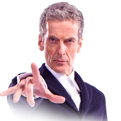

| Home | The Doctors | The Companions | The Villains |
|
|||
The Doctors
|
The 12th Doctor
The Twelfth Doctor is an incarnation of the Doctor, the protagonist of the BBC science fiction television programme Doctor Who. He is portrayed by Scottish actor Peter Capaldi.Within the series' narrative, the Doctor is a time travelling, humanoid alien from a race known as the Time Lords. When the Doctor is critically injured, he can regenerate his body, and in doing so gain a new physical appearance, and with it a distinct new personality; this plot mechanism has allowed the Doctor to be portrayed by a series of actors over the decades since the programme's inception in 1963. Capaldi's portrayal of the Doctor is a spiky, brusque, contemplative, and pragmatic character who conceals his emotions in the course of making tough and sometimes ruthless decisions, this often leading him to question his character and the value of his travels. Capaldi made his first, very brief appearance as the Doctor in the show's fiftieth anniversary special "The Day of the Doctor" (2013), as one of the thirteen incarnations of the Doctor who are summoned to save Gallifrey from destruction. Capaldi's first full appearance was at the end of the 2013 Christmas special "The Time of the Doctor".[2][3] He is accompanied in the eighth series by companion Clara Oswald (Jenna Coleman).
|